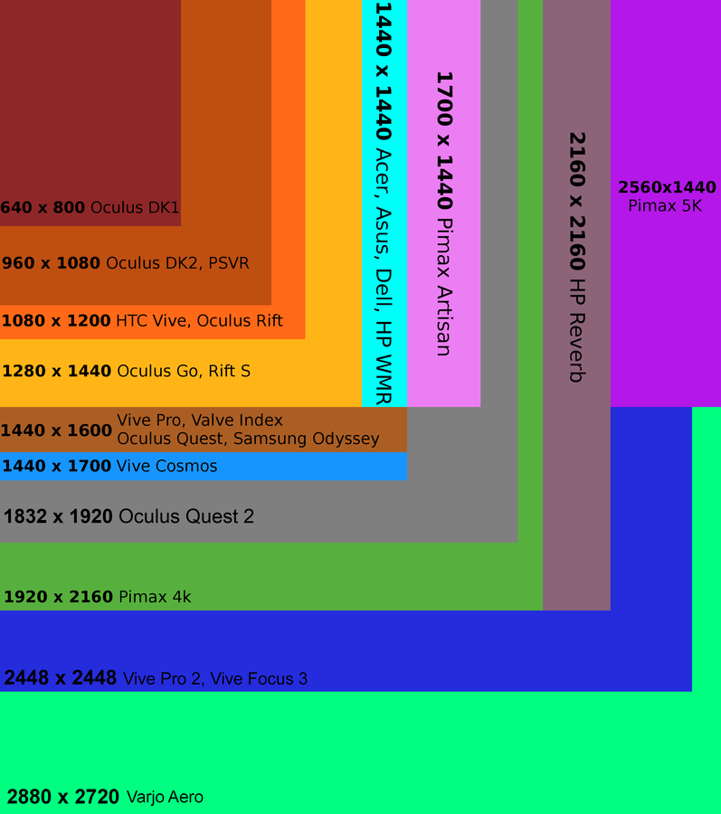
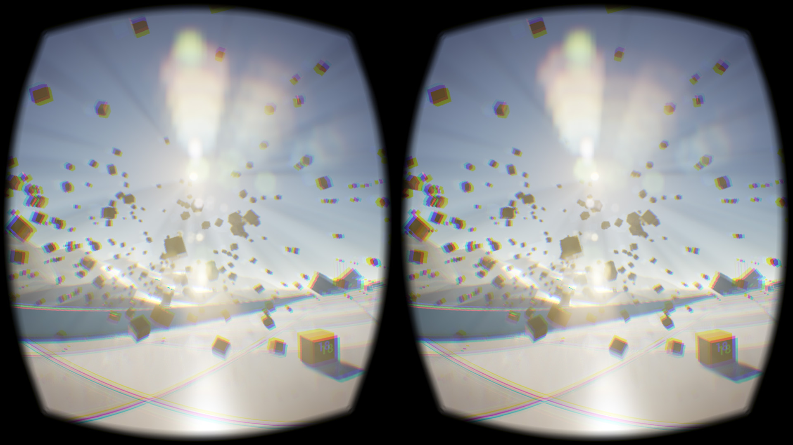

ZAKASNITEVSlušalke za navidezno resničnost imajo višje zahteve glede zakasnitve časa, ki je potreben od spremembe vnosa do vizualnega učinka, kot običajne video igre. Če je sistem preveč počasen, da bi se odzval na premikanje glave, lahko povzroči, da uporabnik doživi slabost virtualne resničnosti, neke vrste potovalne slabosti. Po mnenju inženirja podjetja Valve bi bila idealna zakasnitev 7-15 milisekund. Tudi grafična mora biti dovolj zmogljiva za upodabljanje zahtevane količine okvirjev. |

|
|---|---|
|

|
LOČLJIOVOST IN KAKOVOST PRIKAZALočljivost zaslona se nanaša na število slikovnih pik, ki jih je mogoče prikazati na zaslonu VR headseta. Višja ločljivost pomeni bolj jasne in podrobne slike. Pri VR headsetih je pomembno, da ima zaslon dovolj visoko ločljivost, da se izognejo učinkom mreže na zaslonu (screen-door effect), ki lahko zmanjšajo realističnost izkušnje. Visoka ločljivost pripomore tudi k boljši berljivosti besedila in razpoznavanju drobnih podrobnosti v virtualnem okolju. VR headseti pogosto uporabljajo OLED (Organic Light-Emitting Diode) ali LCD (Liquid Crystal Display) zaslone. OLED zasloni imajo prednost pred LCD zasloni, saj ponujajo boljši kontrast, bogatejše barve in večjo odzivnost. To pripomore k bolj živahni in impresivni vizualni izkušnji. Frekvenca osveževanja se nanaša na število slik, ki jih zaslon prikaže na sekundo. Višja frekvenca osveževanja zagotavlja bolj gladko in tekoče gibanje slik, kar prispeva k bolj udobni uporabniški izkušnji in zmanjšuje možnost gibalne slabosti. Večina VR headsetov ponuja frekvence osveževanja med 90 Hz in 120 Hz, čeprav nekateri naprednejši modeli ponujajo še višje frekvence. |
LEČEPoleg same ločljivosti zaslona je pomembna tudi kakovost optičnih leč v VR headsetu.Kvalitetne leče omogočajo boljšo jasnost in minimalno izkrivljanje slike na robovih zaslona, kar prispeva k bolj naravni in realistični izkušnji. |
|  |
|---|